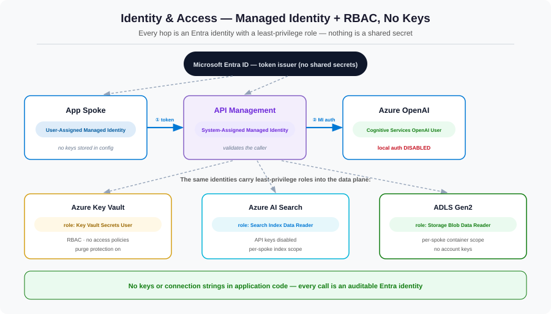

We've referenced "the spoke's identity" and "APIM's managed identity" repeatedly. Now we make it concrete. The target state is simple to state and powerful in effect: there are no keys or connection strings anywhere in the platform. Every hop is an Entra ID identity, and every grant is a narrowly-scoped role.
The problem: keys are a liability you keep paying for
API keys and connection strings feel convenient until you run a platform. They get pasted into config files, checked into repos, shared over chat, and forgotten. They don't expire on their own, they don't tell you who used them, and rotating one means hunting down every copy. For a multi-team AI platform handling sensitive data, a single leaked Azure OpenAI key is a direct line to the model — and to the bill. The hub eliminates the entire category by never issuing keys in the first place.

Managed identities: the building block
A managed identity is an Entra ID identity that Azure creates and rotates for a resource — no credential you ever see or store. Two flavors, used deliberately:
- System-assigned — tied to one resource's lifecycle (we use this for API Management).
- User-assigned — a standalone identity you can attach to one or more resources (ideal per-spoke, so a spoke's identity outlives any single compute instance).
The identity chain, hop by hop
Follow a single request and notice that authentication happens fresh at every hop — there is no shared secret passed along:
- The spoke app presents its user-assigned managed identity to the AI gateway. APIM validates it.
- The gateway turns around and calls Azure OpenAI using its own system-assigned managed identity (the
authentication-managed-identitypolicy from Part 4). - Azure OpenAI accepts that identity because it holds the
Cognitive Services OpenAI Userrole — and, because local auth is disabled, it accepts nothing else.
Granular RBAC: least privilege, by data plane
The crucial detail is that these are data-plane roles, not the broad Contributor. An identity that can call the model cannot manage the account; an identity that can read an index cannot write to it. The platform's core role set:
| Identity | Role | Grants exactly |
|---|---|---|
| APIM gateway | Cognitive Services OpenAI User | Call model deployments — not manage them |
| Spoke app | Search Index Data Reader | Query its own index — not modify it |
| Spoke app | Key Vault Secrets User | Read specific secrets — not list or write |
| Spoke app | Storage Blob Data Reader | Read its container — not delete or manage |
Granting access is two lines of CLI
Role assignments are themselves declarative and auditable. In production these live in Bicep (Part 7), but the intent is clearest in CLI:
# APIM's managed identity may CALL Azure OpenAI — no key involved
az role assignment create \
--assignee-object-id $APIM_MI_PRINCIPAL_ID \
--assignee-principal-type ServicePrincipal \
--role "Cognitive Services OpenAI User" \
--scope $OPENAI_ACCOUNT_ID
# Spoke 1's identity may READ ONLY its own search index data
az role assignment create \
--assignee-object-id $SPOKE1_MI_PRINCIPAL_ID \
--assignee-principal-type ServicePrincipal \
--role "Search Index Data Reader" \
--scope $SEARCH_SERVICE_IDNote the --scope: access is granted at the narrowest resource that makes sense, never the subscription.
Per-spoke isolation
Sharing the engine must never mean sharing the data. Each spoke gets its own user-assigned identity, and that identity is granted roles only on the resources — and ideally the specific indexes, containers, and secrets — that belong to that spoke. Spoke 1's identity has no assignment that touches Spoke 2's index, so even a fully compromised Spoke 1 cannot read Spoke 2's data. This is the security pay-off that makes a shared platform acceptable to risk and compliance teams.
Turn the keys off — for real
None of this matters if the old key door is still unlocked. The final step is to disable local authentication on every service so identity is the only option — which is exactly why we set disableLocalAuth: true on Azure OpenAI and AI Search back in Part 3, and put Key Vault in RBAC mode. With local auth off, even a leaked key is simply rejected.
What this layer bought us
| Control | Problem it solved |
|---|---|
| Managed identities | No credentials to store, leak, or rotate |
| Per-hop authentication | No shared secret travels with the request |
| Data-plane RBAC (least privilege) | Over-broad access; "call" ≠ "manage" |
| Per-spoke scoped assignments | Cross-tenant data leakage |
| Local auth disabled | Leaked keys are simply rejected |
References
- Managed identities for Azure resources
- Azure RBAC overview
- Azure OpenAI role-based access control
- Connect to Azure AI Search using RBAC
- Key Vault RBAC authorization guide
What's next
The platform is now private and keyless. But a platform you can't see is a platform you can't run. In Part 6 we light up observability and cost — turning the token metrics the gateway emits into per-spoke dashboards, alerts, and a chargeback model that makes shared spend fair and visible.